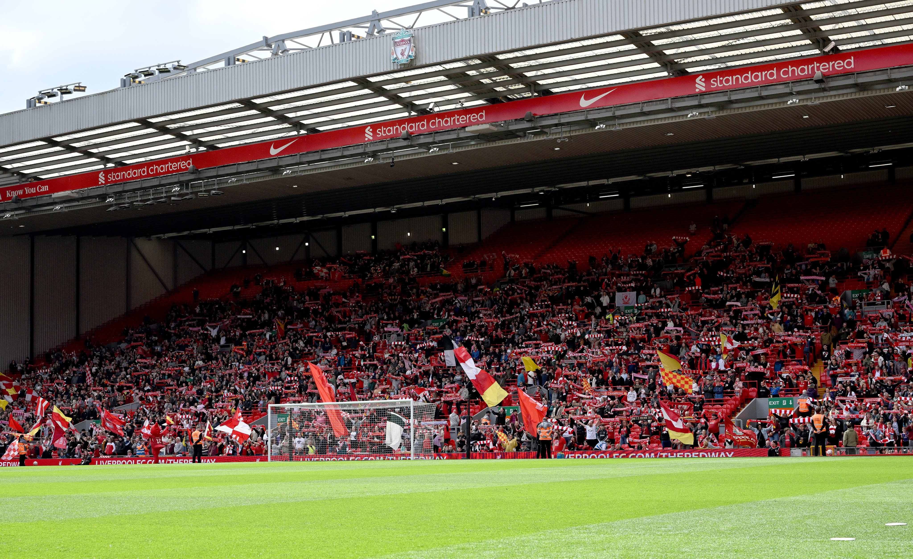
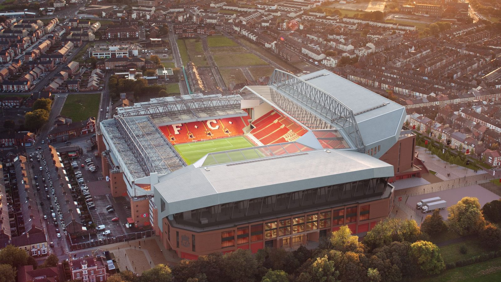
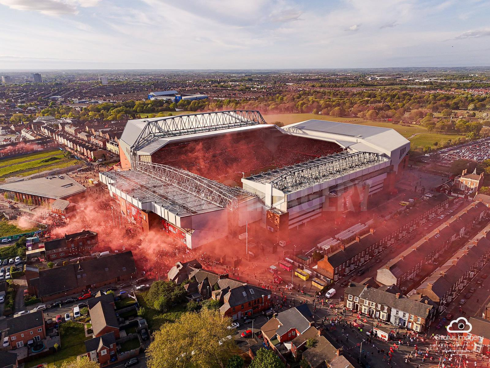
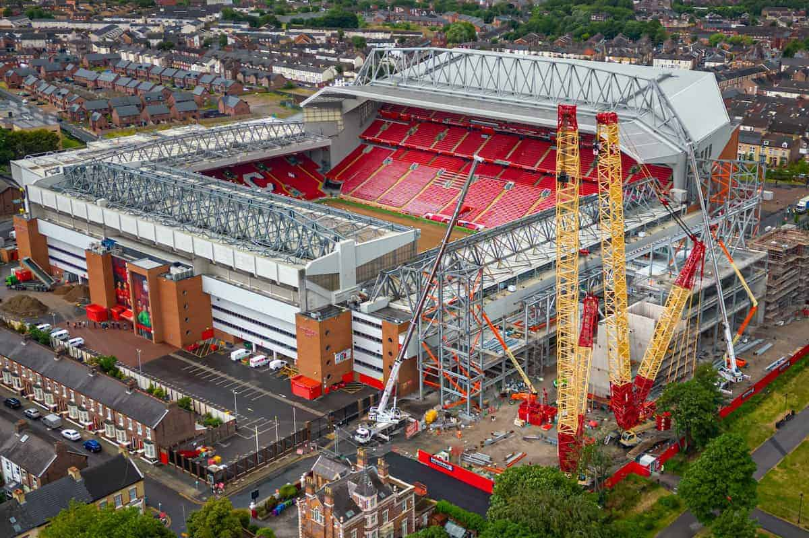

Liverpool FC's home stadium is Anfield , located in Liverpool, England . It has been the club's home since 1892 and is one of the most iconic football stadiums in the world.
Key Facts About Anfield.
Capacity :
- 61,276 , making it the fifth-largest stadium in England⁽¹⁾.
Famous Stands :
- - The Kop – Known for its passionate atmosphere.
- - Main Stand – Expanded in 2016 to increase capacity.
- - Sir Kenny Dalglish Stand – Named after the Liverpool legend.
- - Anfield Road End – Recently redeveloped in 2024.
Historic Moments :
- - Hosted legendary European nights, including Liverpool’s comeback against Barcelona in 2019.
- - The famous " You'll Never Walk Alone " anthem is sung before every match.
Visiting Anfield
- Liverpool FC offers stadium tours where fans can explore the dressing rooms, tunnel, and museum⁽²⁾. You can book a tour [here](https://bookings.liverpoolfc.com/).    